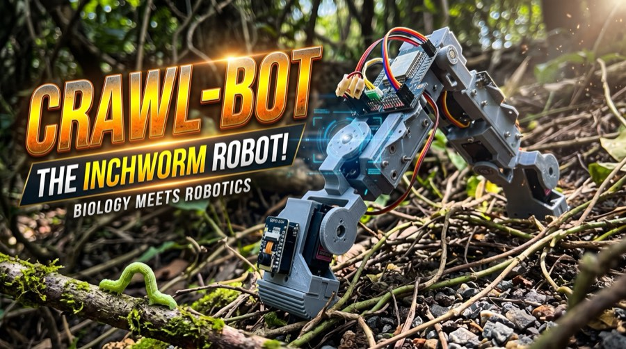
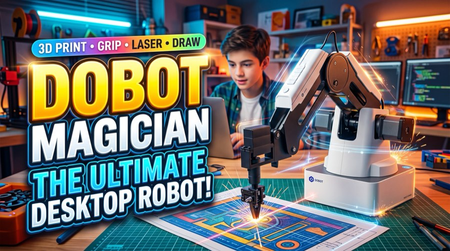
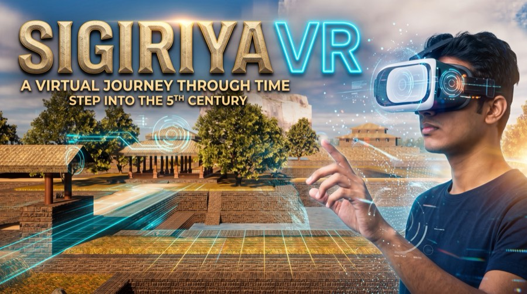
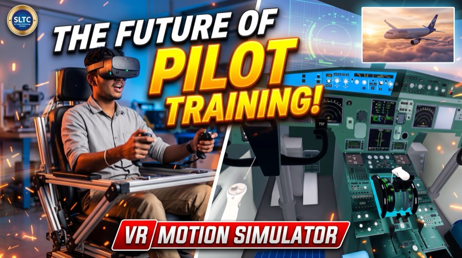

01 Crawl-Bot
02 DOBOT Magician
03 Sigiriya VR
04 VR Flight CockpitTechno 2026
Four exhibits built by students and researchers at the Faculty of Engineering, Sri Lanka Technology Campus.
01
Crawl-Bot
A five-limbed robot that moves with an inchworm’s looping gait, reading the ground ahead with depth vision to cross tile, gravel and 45-degree metal climbs.
02
DOBOT Magician
A desktop robotic arm that swaps tool heads to 3D print, draw, laser engrave and sort objects, placing each one within a fraction of a millimetre.
03
Sigiriya VR
A walk through fifth-century Sigiriya, from the royal water gardens to the Lion’s Paw and the frescoes, built so that anyone can reach the summit.
04
VR Flight Cockpit
An Airbus A320 flight deck in virtual reality, paired with a motion seat that tilts on take-off, shakes through turbulence and jolts on touchdown.